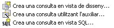
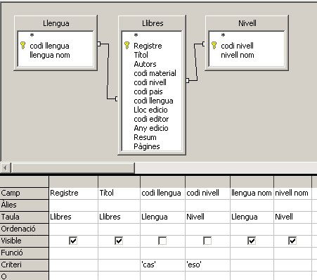
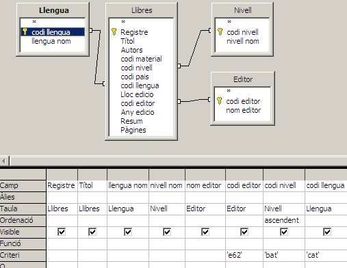
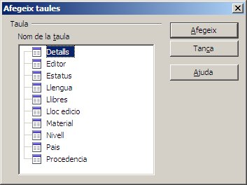
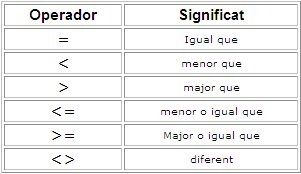
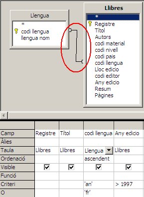
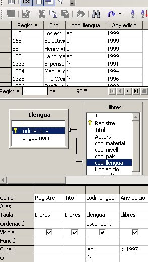
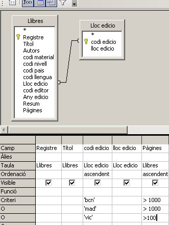
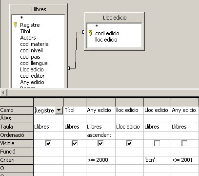
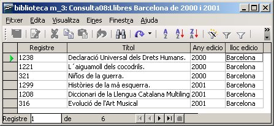

El tema consultes no s'acaba aquí, tot al contrari. Queden una rica i variada gama de les mateixes que s'aniran estudiant a continuació.
Fins ara per explicar el concepte de consulta hi hem posat una consulta amb un sol criteri: el país, el material (tipus de llibre), etc. d'un o de varios llibres.
També es poden fer preguntes a la base de dades que afectin a més d'un aspecte, així es podrien plantejar exemples com aquests:
A la finestra general de les consultes, podem veure que hi ha tres formes possibles de crear-ne una de nova. Aquestes són:

De les tres, ens falta veure'n la tercera, anomenada Vista SQL. Això de l'SQL
és un llenguatge estàndard de bases de dades que caldria estudiar llarg
temps per dominar-lo, es treballa en una pantalla semblant a la de la
imatge següent i cal saber tot un llenguatge de programació molt
específic del món de les bases de dades. El seu estudi queda lluny dels
objectius d'aquest curs i per tant no l'explicarem.

Quant a la Consulta4:catala-bat-e62, la imatge de la solució seria aquesta:

Com veieu, es pot treballar sobre l'anterior consulta però hi
caldria afegir noves taules en el disseny de la mateixa. Per afegir
taules en la vista disseny, es pot fer mitjançant el botó que ens mostrarà aquesta finestra que ja coneixem:

Per al cas de l'altra consulta demanada, Consulta05:castella-1960,
només cal dir que el criteri amb xifres es pot fer treballant amb els
signes de > (major que), < (menor que) També es pot combinar el
signe = i el > per significar major o igual que… Observeu el quadre següent amb les possibilitats principals:

Podeu anar provant els efectes dels operadors de la imatge anterior i
deseu finalment el criteri que es demana al començament d'aquesta
pràctica, concretament llibres en castellà editats abans de 1960, per
tant <1960 i 'cas', en les columnes corresponents als camps Any
edicio i codi llengua.
Quan parlem del criteri I lògic, això vol dir que la consulta ha de complir els criteris de forma simultània, és a dir, a l'hora. Aquests es posen en la mateixa fila (o mateixa línia) de criteris. Un exemple d'aquest tipus de criteri I lògic, ja l'hem vist abans en les altres consultes, doncs es feia que complissin de vegada més d'una condició: que siguin en català (llengua)i universitaris (nivell), etc.
Per una altra banda, el criteri O lògic, s'aplica posant el segon criteri a sota del primer. Afecta al mateix camp i pot ser un o l'altre (donarà per resposta els registres que compleixin una condició i l'altra).
Per veure-ho posarem uns exemples:
Farem la Consulta06:frances-angles-1997
Si ens fixem en la següent imatge del disseny de la Consulta06, podrem observar que en ella hi ha criteris I i també criteris O:

Si volem veure els resultats sense sortir del disseny de la consulta, polsem sobre el botó i obtindrem la resposta a la consulta, tal com podeu comprovar aquí:

Tal com es pot veure, sense sortir del disseny tenim la resposta en la
mateixa pantalla: veiem tots els registres de llengua francesa, sense
tenir en compte els anys, i els registrs de llengua anglesa, però en
aquest cas només posteriors a 1997.
Exemples d'aquests tipus en podem posar i trobar molts. Aquí se'n planteja un altre:
Consulta7:Madrid-Barcelona-vic-1000-100
Volem que la nova consulta ens mostri tots els registres dels llibres que no siguin editats a Madrid ni a Barcelona i que tinguin més de 1000 pàgines. També volem veure en la mateixa consulta els llibres editats a Vic amb més de 100 pàgines.
Mireu la solució de l'exercici anterior:

Com podeu observar en la imatge anterior, els camps relacionats
en aquesta consulta, són codi edicio de la taula Lloc edicio i el camp
Lloc edicio de la taula Llibres. Cal recordar que el que importa en una
relació no és el nom dels camps, sinó el seu contingut. Si feu la prova
de relacionar els camps lloc edicio de les dues taules implicades, els
resultats de la consulta seran de 0 registres, i això passa perquè un
dels camps és un camp codi (el de la taula Llibres) i l'altre és un
camp amb una descripció (de la taula Lloc edicio). Per tant, tot i que
el seu nom sigui igual, el que realment importa, és el seu contingut,
tal com es demostra en aquest exemple.
I els resultats, són un exemple de tres critesis I i tres criteris O lògics.
Per últim, si volem fer intervals del tipus: Llibres publicats entre
un primer any determinat i un segon any, això ho caldria fer amb l'ús
dels signes > i <
i com que volem que acompleixin tots dos criteris a l'hora, estem
parlant d'un criteri I. Per tant, per poder-lo posar cal utilitzar dos
cops el nom del camp i en un d'ells posar-hi el primer criteri, i a
l'altre el segon criteri.
Aquí en mostrem un exemple.
Desarem la consulta com Consulta08:Llibres Barcelona de 2000 i 2001
El disseny de la mateixa haurà de ser com el de la següent imatge:

I el resultat que n'obtindrem serà com aquest:

Fins aquí els criteris múltiples, ara uns pocs aspectes més sobre consultes.

|
|

|
|